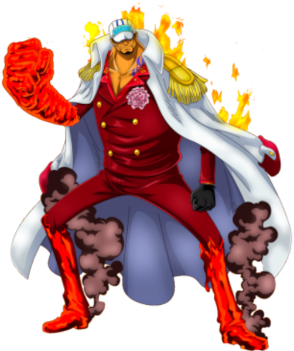
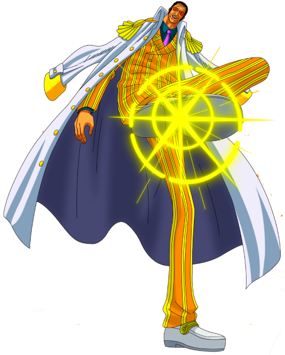
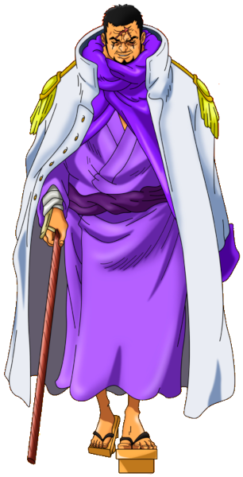

Essa organização pode atrapalhar um pouco a vida do Luffy e seus tripulantes, pois são umas das maiores forças do mundo de One Piece
Na marinha temos os Almirantes que são a maior força deles.
Sakazuki mais conhecido como Akainu é o atual almirante da frota da Marinha, sucedendo o almirante da frota anterior Sengoku.Durante a primeira metade da série, ele foi um dos três almirantes, e o último a aparecer na série.Ele ascendeu à posição de almirante da frota depois de derrotar Kuzan em um duelo de dez dias que deixou Punk Hazard em seu estado atual, metade congelada e metade em chamas. Uma de suas primeiras decisões foi a de mudar o Quartel General da Marinha para o Novo Mundo, em preparação para a nova era dos Piratas.
Borsalino mais comumente conhecido por seu pseudônimo Kizaru,é um almirante da Marinha. Depois que Aokiji renunciou aos marinheiros e Akainu foi promovido a almirante da frota, Kizaru é agora o único almirante remanescente do trio anterior.
Issho, comumente conhecido por seu epiteto Fujitora, é um almirante da Marinha.Ele foi recrutado para a Marinha através de um Projeto Militar Mundial durante o timeskip de dois anos, juntamente com o companheiro recém-chegado Aramaki, ambos preenchendo as duas vagas nas posições de almirante causadas pela demissão de Kuzan e pela promoção de Sakazuki.
